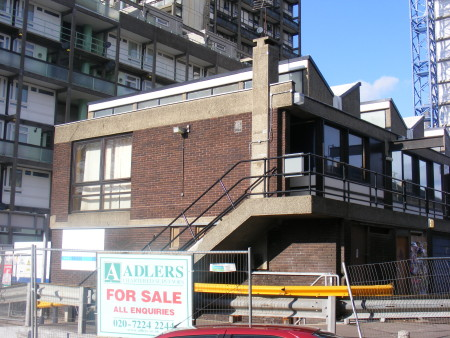
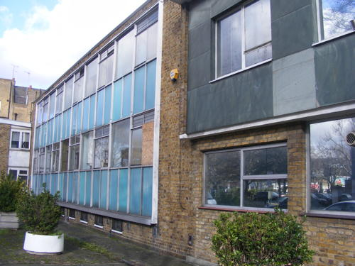
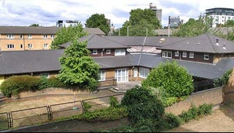
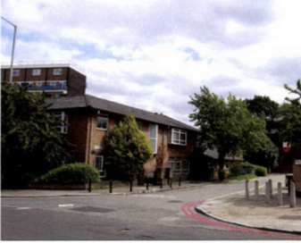
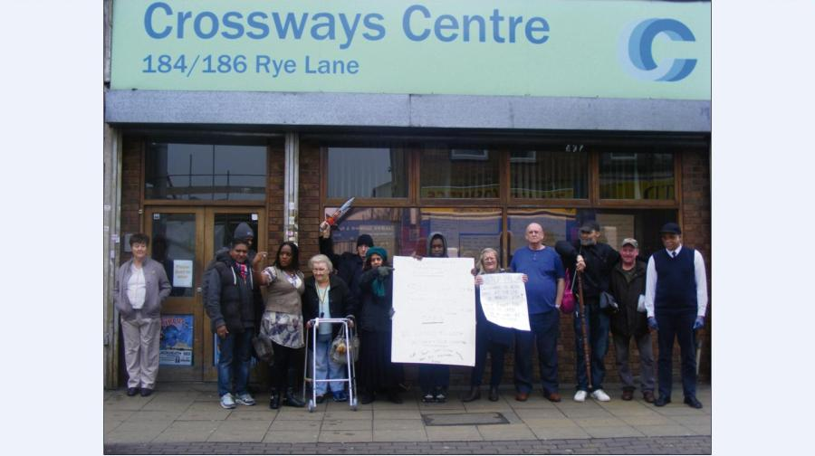
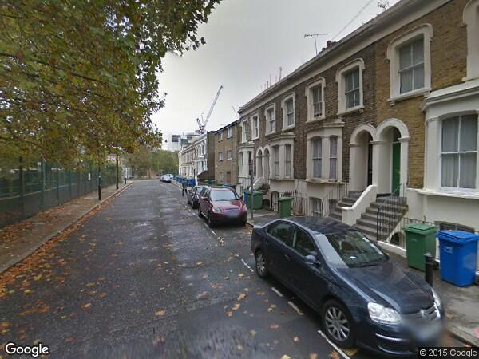
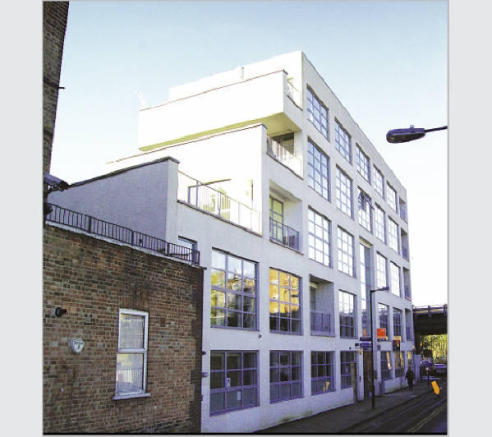
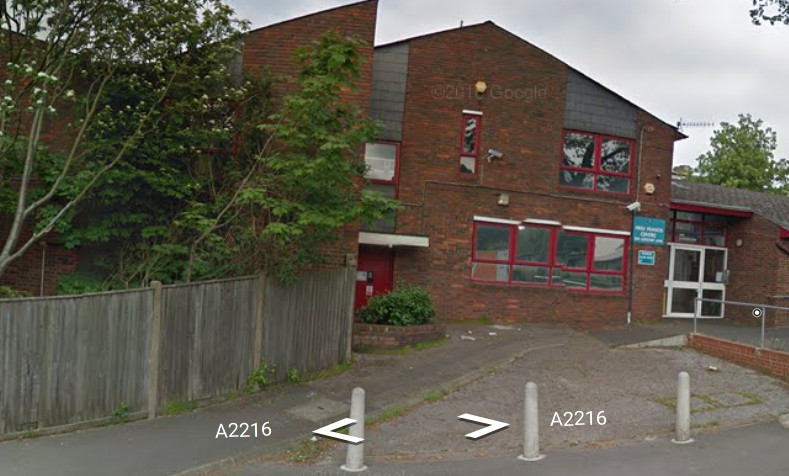
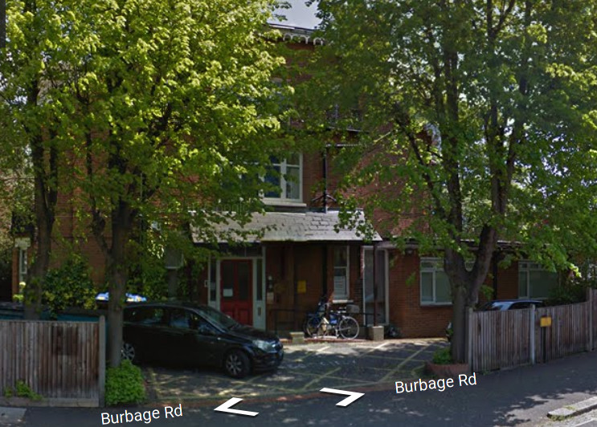
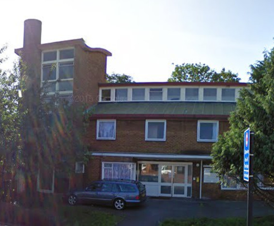

<!DOCTYPE html>
<html>
<head>
	<title>Adult care & Mental health facilities lost to 'regeneration'</title>
	<meta charset="utf-8" />

	<meta name="viewport" content="width=device-width, initial-scale=1.0">

	<link rel="stylesheet" href="https://npmcdn.com/leaflet@1.0.0-rc.2/dist/leaflet.css" />
</head>
<body>
	<div id="map" style="width: 1500px; height: 1000px"></div>

	<script src="https://npmcdn.com/leaflet@1.0.0-rc.2/dist/leaflet.js"></script>
	<script>
		var map = L.map('map').setView([51.48320, -0.05905151], 14);


		L.tileLayer('http://{s}.tiles.mapbox.com/v3/enrico-in-w.ka4k56fp/{z}/{x}/{y}.png',  { attribution: 'Map tiles &copy; <a href="http://mapbox.com">MapBox</a>' }).addTo(map);

		var LeafIcon = L.Icon.extend({
			options: {
				shadowUrl: 'img/savillsshadow.png',
				iconSize:     [38, 95],
				shadowSize:   [50, 64],
				iconAnchor:   [22, 94],
				shadowAnchor: [4, 62],
				popupAnchor:  [-3, -76]
			}
		});

		var greenIcon = new LeafIcon({iconUrl: 'img/savillssign.png'}),
			redIcon = new LeafIcon({iconUrl: 'img/savillssign.png'}),
			orangeIcon = new LeafIcon({iconUrl: 'img/savillssign.png'});

		L.marker([51.49243, -0.09948850], {icon: greenIcon}).bindPopup('</br><a href="http://www.london-se1.co.uk/news/view/5867" target="_blank">Castle Day Centre</a></br>Hampton St, SE1 6SN</br>Mental Health Day Centre').addTo(map);

L.marker([51.49885, -0.09603918], {icon: redIcon}).bindPopup('</br><a href="http://www.london-se1.co.uk/news/view/7479" target="_blank">Harper Rd Social Services</a></br>23 Harper Rd, SE1 6AW</br>Childrens social services offices').addTo(map);

L.marker([51.49742, -0.07878721], {icon: orangeIcon}).bindPopup('</br><a href="http://moderngov.southwarksites.com/documents/s4006/Disposal%20of%20Four%20Sites%20to%20Native%20Land%20Off-site%20Affordable%20Housing.pdf" target="_blank">Abbey St Childrens Home</a></br>70 Abbey St, SE1 3NG</br>Childrens Home').addTo(map);

L.marker([51.49810, -0.07927537], {icon: orangeIcon}).bindPopup('</br><a href="http://moderngov.southwarksites.com/documents/s4006/Disposal%20of%20Four%20Sites%20to%20Native%20Land%20Off-site%20Affordable%20Housing.pdf" target="_blank">Whitstable Day Nursery</a></br>Stevens St, SE1 3BX</br>Childrens Day Nursery').addTo(map);

                L.marker([51.46732, -0.06663948], {icon: orangeIcon}).bindPopup('</br><a href="http://www.southwarknews.co.uk/news/mental-health-charities-issue-warnings-over-centre-closures-in-southwark/" target="_blank">Crossways Centre</a></br>184-186 Rye Lane, SE15 4NF</br>Mental Health Day Centre').addTo(map);

                L.marker([51.49164, -0.09561539], {icon: orangeIcon}).bindPopup('</br><a href="http://moderngov.southwark.gov.uk/Data/Executive/20071016/Agenda/Item%2017%20-30-32,%2036%20and%2038-40%20Wansey%20Street%20-%20Disposal%20of%20Properties%20-Report.pdf" target="_blank">Wansey St Homeless Hostels</a></br>30-32 & 38-40 Wansey St, SE17</br>Homeless Hostels').addTo(map);
                
                L.marker([51.48072, -0.09515405], {icon: orangeIcon}).bindPopup('</br><a href="http://www.southwarknews.co.uk/news/mental-health-charities-issue-warnings-over-centre-closures-in-southwark/" target="_blank">Lorrimore Centre</a></br>1 Bethwin Road, SE5 OSH</br>Mental Health Day Care').addTo(map);

                L.marker([51.45258, -0.07672191], {icon: orangeIcon}).bindPopup('</br><a href="http://www.housingcare.org/service/ser-info-5894-community-day-c.aspx" target="_blank">Fred Francis Day Centre</a></br>269-281 Lordship Lane, SE22 8JG</br>Care Home/Day Centre</br>for elderly/dementia').addTo(map);

                L.marker([51.45284, -0.09609818], {icon: orangeIcon}).bindPopup('</br><a href="http://moderngov.southwark.gov.uk/documents/s19568/Report%20Holmhurst.pdf" target="_blank">Holmhurst Day Centre</a></br>46 Halfmoon Lane, SE24 9JX</br>Care Home/Day Centre</br>for elderly/dementia').addTo(map);

                L.marker([51.49246, -0.06947994], {icon: orangeIcon}).bindPopup('</br><a href="http://moderngov.southwark.gov.uk/mgIssueHistoryHome.aspx?IId=50007717" target="_blank">Welch House Care Home</a></br>94-116 Southwark Park Road, SE16 3RR</br>Care Home for elderly/dementia').addTo(map);

	</script>
</body>
</html>
